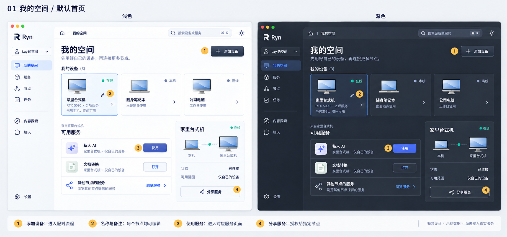
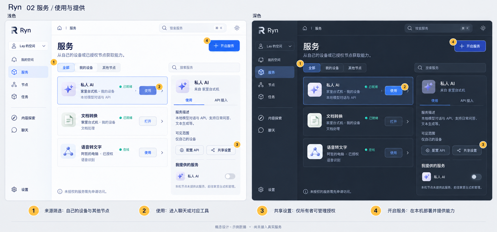
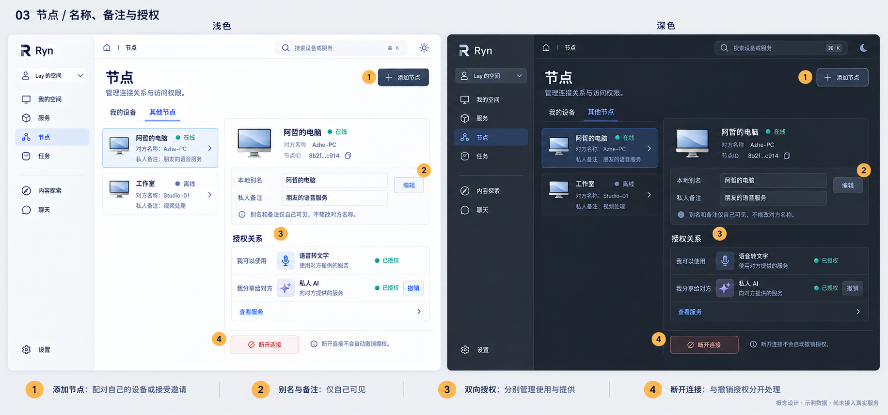
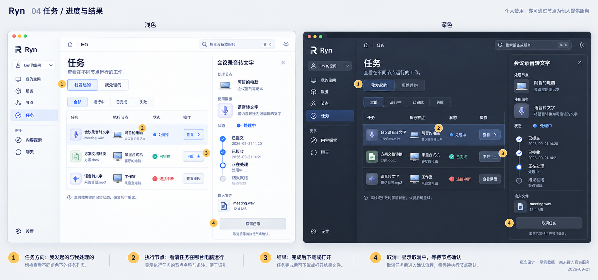
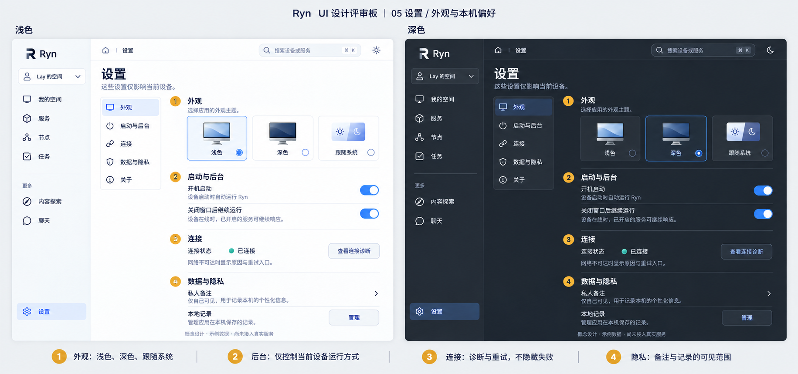
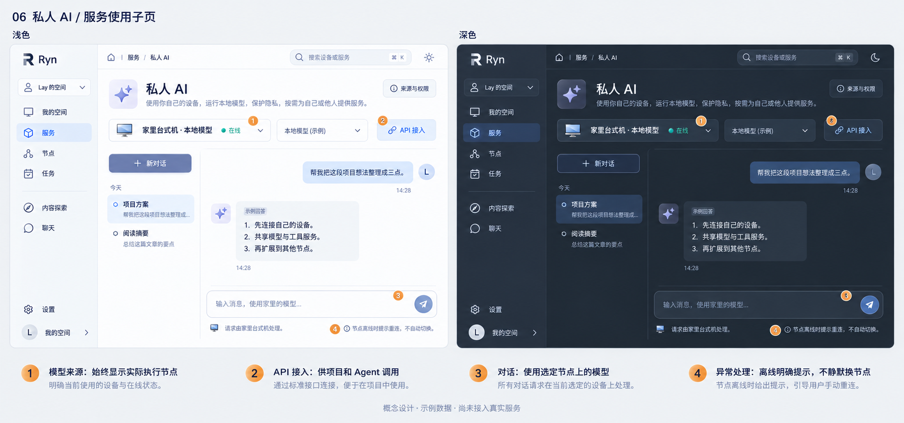
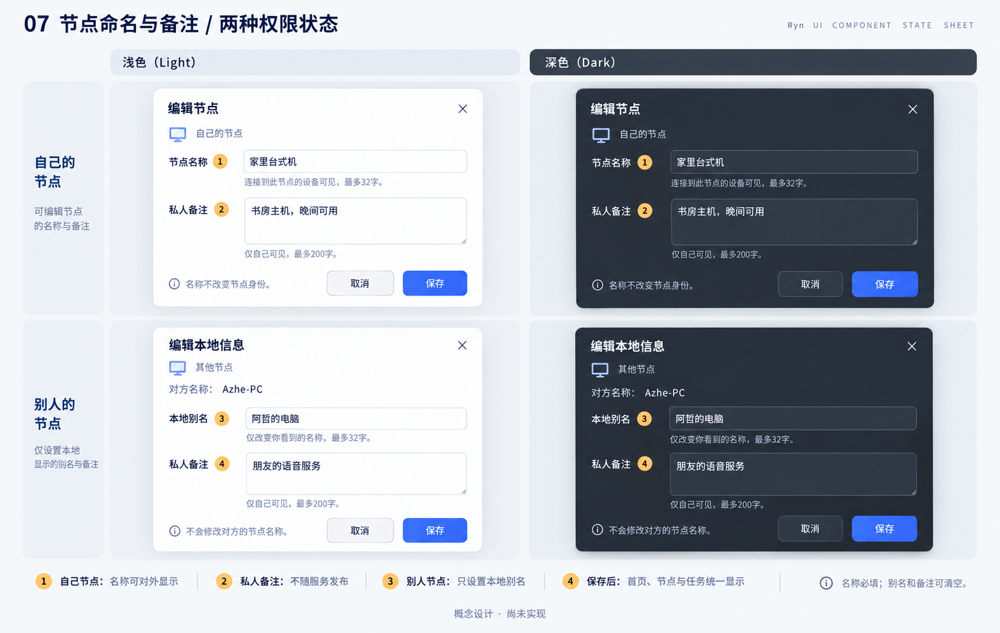

01 · 我的空间
添加设备、节点名称与备注、快速使用、分享服务

02 · 服务
来源筛选、使用入口、API 接入、提供服务

03 · 节点
自己的设备与其他节点、别名备注、双向授权

04 · 任务
我发起的与我处理的、执行节点、进度结果、取消

05 · 设置
明暗主题、跟随系统、后台、连接诊断、隐私

06 · 私人 AI 子页
模型来源、API 接入、对话、离线提示

07 · 编辑名称与备注
自己的节点名称、别人的节点别名、私人备注
